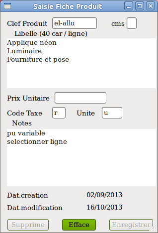

|  |
==
Clef Produit (11 caractères maximum) La saisie d'une clef et sa validation provoque: 1_ Affichage de la fiche mémorisée avec cette clef. 2_ Rien. C'est à dire que la fiche est inchangée. La clef n'existe pas. Soit c'est une erreur de frappe, soit on s'apprête à créer une fiche. Voir plus bas les précautions pour la création de fiche. Si la fenêtre 'Liste' est activée, les produits correspondants à la saisie sont listés. == cms ( création, modification, suppression) valeurs acceptées: ' ' (blanc), 'c', 'm', 's' ' ' (blanc) = consultation de la fiche. 's' = suppression de la fiche active le bouton 'Supprime', un clic sur ce bouton supprime définitivement la fiche. 'm' = modification active le bouton 'Enregistrer', un clic sur ce bouton enregistre les modifications saisies ( sauf Clef Produit). 'c' = création d'une fiche active le bouton 'Enregistrer'. L'utilisateur choisit la clef (ou code) de son produit tel qu'il pourra par la suite la retrouver facilement. code commençant par un point '.' interdit. conseil: coder avec lettres minuscules sans accent, chiffres, tiret sans espaces. éviter tous les autres caractères: ';', '%' , etc coder avec 2 caractères au minimum. |
||||
| Précautions Saisir une clef inconnue n'efface pas la fiche précédente. Intérêt: saisir des produits de même type en modifiant que les informations qui les différencient. exemple: baignoires de dimensions différentes. 1er temps: on crée la fiche d'une baignoire codée 'baac160-70'. On enregistre. 2ème temps: on réaffiche la baignoire 'baac160-70' on modifie la fiche avec attention: clef en 'baac180-80', libellé, prix, etc. cms = 'c' et enregistrement. Modification de clef Le principe est semblable. Affichage de la fiche. Modification de la clef. Création et enregistrement. Réaffichage de la fiche avec la mauvaise clef et sa suppression. Informations de la fiche Aucune information n'est obligatoire mis à part la clef. Absence complète de libellé : à priori ça n'a aucun sens. Si les informations 'prix unitaire', taxe, unité sont absentes, c'est le choix de l'utilisateur qui souhaite compléter la ligne du produit lors de la saisie de la facture. == Libellé (250 caractères maximum) Saisir le libellé tel qu'il apparaitra sur la facture. Dans la saisie facture, le calcul se fait sur la dernière ligne du libellé. Attention de ne pas saisir de lignes vides en fin de libellé. Si c'est le cas, modifier la fiche en se plaçant à la fin de la dernière ligne utile et taper sur la touche 'suppr' (delete) du clavier. La copie de fiche produit de ce manuel montre un exemple de produit où l'utilisateur a prévu de supprimer une ligne lors de la saisie de facture ( soit néon, soit luminaire) et de saisir le prix unitaire. == Prix unitaire facultatif. Selon l'activité il est hors taxes ou toutes taxes. Dans le cas où on a l'usage des deux situations, rien ne s'oppose à créer une fiche pour chaque cas. == Code Taxe facultatif. sinon 1 caractère. Les codes et valeurs de TVA doivent être définis au préalable (Menu -> 'Paramétres' -> 'Taux TVA'. Si le code est absent et si le produit genère un montant à facturer, il faudra obligatoirement le saisir dans la saisie de facture. ( Si besoin on peut définier un code TVA au taux de 0%). == Unité facultatif. sinon 4 caractères libres: u, M2, Hl, T etc ==Notes (250 caractères maximum) Zones libres pour mémoriser notes, remarques, code fournisseur, prix achat, etc. ============ LISTE PRODUITS
|
|||||